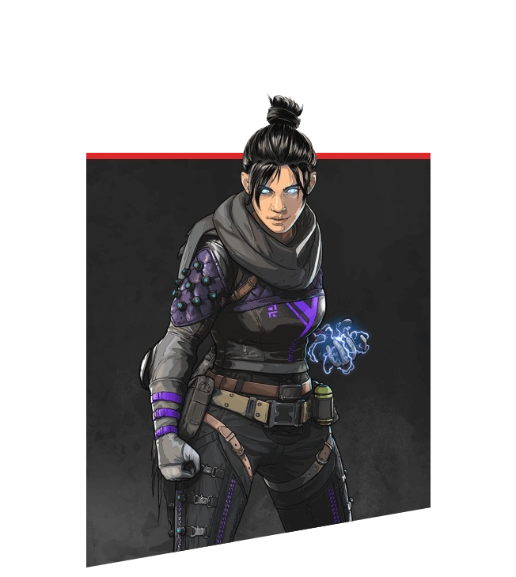
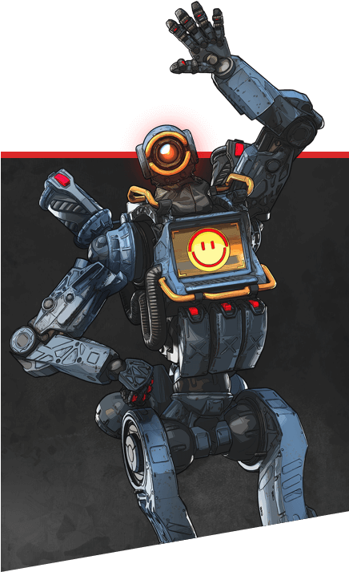
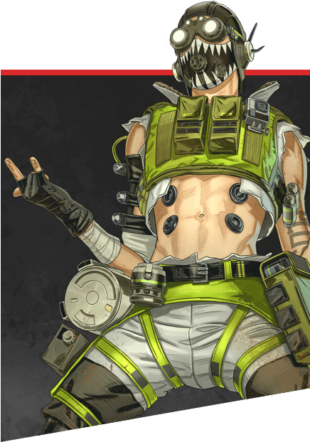

|

|
Wraith
Guerreira Interdimensional
Wraith é uma grande lutadora, capaz de executar ataques mortais e manipular
o espaço-tempo abrindo fendas no tecido da realidade, mas ela não sabe como adquiriu essas habilidades.
Anos atrás, ela acordou em uma instalação de detenção da IMC sem saber quem era. Ela também começou a ouvir
uma voz sussurrando na sua cabeça, que a mantinha acordada à noite. Apesar de quase perder a sanidade,
quando ela começou a escutar e confiar na voz, ela aprendeu a dominar o seu poder de manipulação da realidade e
conseguiu escapar.
|

|
Bloodhound
Rastreadora Tecnológica
Bloodhound ganhou fama nas Terras Ermas como um dos melhores caçadores que a Fronteira já viu... Sua identidade é um mistério, cheio de rumores: dona de uma fortuna imensa, encantadora de Golias, ex-escrava, meio-morcego, e muito mais, dependendo de quem você perguntar.
|

|
Bangalore
Combatente Profissional
Nascida em uma família militar, Bangalore foi uma soldado excepcional durante toda a sua vida. Ela era a melhor da turma na academia militar da IMC e a única cadete capaz de desmontar uma Peacekeeper, equipá-la com um funil de precisão e remontá-la em menos de 20 segundos... tudo isso vendada.
|

|
Gibraltar
Fortaleza Blindada
Gibraltar é um gigante gentil com um lado selvagem. Filho de dois voluntários da SARAS (Associação de Busca e Resgate de Solace), ele sempre foi bom em tirar os outros de situações perigosas, muito comuns nas Terras Ermas. Porém, ele só começou a entender o valor de proteger os outros quando ele e o namorado roubaram a moto do pai, deram uma volta e ficaram presos num perigoso deslizamento de lama. Ele foi salvo pelos pais, porém, o pai dele perdeu um braço no processo. Gibraltar nunca se esqueceu desse sacrifício e dedicou a vida a ajudar os necessitados.
|

|
Lifeline
Médica de Combate
Ajay Che, conhecida como Lifeline, não é alguém que você esperaria encontrar nos Jogos Apex. Filha de ricos mercadores de armas, ela fugiu de casa quando descobriu os estragos que a família tinha causado e se alistou no Corpo Militar da Fronteira, uma organização humanitária que ajuda as comunidades necessitadas da Fronteira. Desde então, ela dedicou a vida a ajudar os outros, e entrou para os Jogos Apex a fim de financiar o Corpo Militar da Fronteira com o dinheiro da premiação.
|
|

|
Pathfinder
Batedor Avançado
Pathfinder é a cara do otimismo, apesar das circunstâncias. Um MRVN (Medição Robótica Versátil de terreNos) modificada realizar reconhecimento de local e levantamento topográfico que foi ativado décadas atrás em um armazém abandonado, sem saber quem o criou ou por quê. Apenas com a designação MRVN indicando sua identidade, Pathfinder eventualmente partiu em busca de seu criador.
|

|
Caustic
Caçador Tóxico
Antes de se tornar o Caustic, um cientista chamado Alexander Nox trabalhava na Humbert Labs, o principal fabricante de gases de pesticidas da Fronteira. Com o excesso de pesticidas necessários para proteger as lavouras das colônias da Fronteira, a Humbert Labs estava sempre atrás de fórmulas melhores e mais fortes. Nox era um dos cientistas mais brilhantes e trabalhava dia e noite desenvolvendo gases novos. Mas, para garantir que os gases funcionavam, ele precisava testar mais do que apenas tecido inerte: ele precisava de seres vivos.
|

|
Mirage
Trapaceiro Ilusionista
Mirage é o tipo de cara que gosta de aparecer. O caçula de quatro irmãos, ele aperfeiçoou a arte de fazer graça para chamar a atenção. A única coisa que ele levava a sério era a tecnologia de holopilotos: apresentado à tecnologia ilusionista pela mãe engenheira, ele se debruçou sobre os mecanismos e aprendeu tudo sobre eles. Até mesmo quando os irmãos desapareceram em ação na Guerra da Fronteira, Mirage e a mãe continuaram desenvolvendo dispositivos holográficos, e o trabalho os aproximou.
|
|

|
Octane
Viciado em Adrenalina
Certo dia, Octavio Silva estava entediado. Na verdade, ele estava entediado na maior parte dos dias. Filho do apreensivo CEO da Farmacêutica Silva e sem nada mais pra fazer na vida, ele se diverte ao realizar manobras mortais e postando holovídeos para os fãs verem. Então, neste dia, ele decidiu tentar o recorde de um desafio ao lançar-se através da linha de chegada ... utilizando uma granada
|